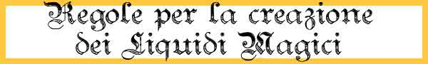

|
 |
In questa
sezione sono descritte le regole utilizzabile dagli utenti di magia per la
creazione dei liquidi magici.
Si noti che i chierici utilizzano
regole differenti per la creazione dei liquidi magici come specificate
nell'apposito regolamento all'interno della descrizione del relativo culto
religioso.
Per poter
procedere alla produzione delle pozioni magiche occorre che il mago disponga dei
seguenti strumenti:
1) IL
LABORATORIO MAGICO :
Si
tratta di un laboratorio magico specifico che può essere utilizzato unicamente
per la creazione dei liquidi magici. Esistono varie tipologie di laboratori
utilizzabili dal più economico e semplice al più grande e complesso, come
indicato nella sottostante tabella:
|
TIPOLOGIA DI LABORATORIO |
COSTO
- MANUTENZIONE MENSILE |
SPAZIO
E PESO |
|
Laboratorio Minimo |
1000
monete d'oro - 15 g.p. / mese |
30
mq. / 100
libbre |
|
Laboratorio Professionale |
2500
monete d'oro - 37 g.p. / mese |
50
mq. / 200
libbre |
|
Laboratorio Avanzato |
6000
monete d'oro - 90 g.p. / mese |
70
mq. / 300
libbre |
|
Si noti
che in ogni laboratorio può lavorare un unico utente di magia alla volta (con
gli apprendisti) anche se è possibile accorpare più laboratori nello stesso
edificio per permettere lo svolgimento simultaneo di più procedimenti di
creazione.
Questi
laboratori contengono la strumentazione minima necessaria (di peggiore o
migliore qualità) per la produzione di liquidi magici. Esistono poi alcuni
strumenti supplementari,
acquistabili singolarmente, che migliorano in diversi modi il metodo di
produzione dei liquidi magici o sono necessari per la loro produzione.
1 bis)
STRUMENTI SUPPLEMENTARI
Miscelatore di Sostanze Oleose
(500 g.p. / 7 g.p.
manutenzione mensile, nessuno spazio ulteriore richiesto, 25 libbre)
Questo miscelatore è uno
strumento necessario per
produrre nel laboratorio gli oli magici.
Senza questo strumento, infatti, non è possibile produrre nel laboratorio questa
tipologia specifica di liquidi magici.
Duplicatore di Fluidi
(800 g.p. / 12 g.p.
manutenzione mensile, nessuno spazio ulteriore richiesto, 30 libbre)
Questo strumento può essere utilizzato solo per produrre nel laboratorio liquidi
magici della tipologia pozioni magiche. Quando il mago decide di avvalersi di
questo strumento lo stesso procederà, con un unico procedimento produttivo, alla
produzione di due pozioni
magiche. In particolare,
tutta la procedura utilizzata seguirà le normali regole necessarie alla
produzione di una sola pozione ad
eccezione dell'utilizzo dei reagenti magici
che dovranno essere impiegati (dello stesso tipo) per entrambe le pozioni.
Eventualmente, un'unica risorsa mistica può essere utilizzata nella produzione
ma la stessa concederà solo la metà (per difetto) del beneficio normalmente
concesso. Quando il mago utilizza questo strumento, inoltre, lo stesso riceve una
penalità di - 5% alla
prova di produzione.
Un'unica prova di produzione sarà richiesta per entrambi i liquidi che saranno
al termine della produzione esattamente uguali. Si noti che nonostante il mago
abbia prodotti due pozioni, avendo effettuato un solo procedimento accumulerà
esperienza nella produzione e nei punti esperienza come se avesse prodotto una
sola pozione.
Alambicchi a Compressione
(1000 g.p. / 15 g.p.
manutenzione mensile, nessuno spazio ulteriore richiesto, 20 libbre)
Questo strumento permette di
ridurre di 2 giorni il
tempo base di produzione
di qualsiasi liquido magico. Quando il mago utilizza questo strumento, inoltre,
lo stesso riceve una
penalità di - 2% alla
prova di produzione.
L'utilizzo di questo strumento è incompatibile con quello degli Alambicchi ad
Evaporazione Lenta.
Alambicchi ad Evaporazione Lenta
(1000 g.p. / 15 g.p.
manutenzione mensile, nessuno spazio ulteriore richiesto, 20 libbre)
Quando il mago utilizza questo strumento
aumenta di 2 giorni il
tempo base di produzione
di qualsiasi liquido magico. Il mago, però, riceve un
bonus del 3% alla prova di
produzione. L'utilizzo di
questo strumento è incompatibile con quello degli Alambicchi a Compressione.
Esaltatori di Aura
(500 g.p. / 10 g.p.
manutenzione mensile, nessuno spazio ulteriore richiesto, 10 libbre)
Si tratta di una serie di sostanze in grado di esaltare l'aura magica presente
nelle risorse mistiche. Se, quindi, il mago utilizza validamente una
risorsa mistica
nel procedimento di produzione all'interno di un laboratorio dove sono presenti
questi esaltatori la risorsa utilizzata darà un bonus alla percentuale di
successo del procedimento (supplementare rispetto a quello normalmente concesso)
che varia a seconda della tipologia di risorsa utilizzata come indicato nella
tabella sottostante.
Guanti e
Veste Protettiva
(100 g.p. / 1 g.p.
manutenzione mensile a persona, nessuno spazio ulteriore richiesto, 2 libbre)
Si tratta di indumenti protettivi utilizzabile nella fase di produzione. In caso
di esplosione accidentale per effetto di fallimento del tiro di produzione chi
li indossa riceverà un bonus di +2 (+10%) al tiro salvezza per dimezzare i
danni. Le vesti, però, impediscono leggermente i movimenti all'interno del
laboratorio. Il mago che le usa, quindi, riceve una
penalità di - 2% alla
prova di produzione.
2) LA
LIBRERIA DEI LIQUIDI MAGICI :
Il mago,
inoltre, necessita di una libreria per la produzione di liquidi magici. Tale
libreria si divide in due diverse sezioni:
|
 |
A)
LIBRERIA GENERICA
Si
tratta di una libreria con i volumi concernente competenze utili per la
creazione dei liquidi magici. Sono utili alla creazione dei liquidi magici tutti
i volumi scritti sulle seguenti materie (competenze non relative alle armi):
Alchemy
(Numero massimo di testi utili:
5)
Botany
(Numero massimo di testi utili:
2)
Brewing
(Numero massimo di testi utili:
1)
Cooking
(Numero massimo di testi utili:
1)
Herbalism
(Numero massimo di testi utili:
2)
Dowsimg
(Numero massimo di testi utili:
3)
Pharmacy
(Numero massimo di testi utili:
2)
Sage Knowledge - Alchemy
(Numero massimo di testi utili:
5)
Sage Knowledge - Botany
(Numero massimo di testi utili:
3)
Sage Knowledge - Herbalism
(Numero massimo di testi utili:
3)
Sage Knowledge - Chemistry
(Numero massimo di testi utili:
5)
Sage Knowledge - Myconology
(Numero massimo di testi utili:
3)
La
libreria deve contenere un minimo di 5 testi e può contenere utilmente fino a
35 testi. Il numero massimo di testi utili è indicato a fianco di ogni singola
materia (possedere più testi della materia indicata non darà quindi alcun
beneficio in fase di produzione).
|
Ogni
testo ha un valore medio di mercato pari a:
400 g.p.
se scritto in due volumi in pergamena da 100 pagine l'uno peso 3 libbre (costo
di manutenzione 2 corone mensili l'uno)
450 g.p.
se scritto in un unico volume in carta da 200 pagine peso 4 libbre (costo
di manutenzione 3,5 corone mensili
)
B)
LIBRERIA DELLE RICETTE
La
libreria specifica contiene i volumi con le ricette che il mago deve seguire
pedissequamente nel procedimento di creazione dei liquidi magici. Ogni tipologia
di liquido magico richiede una specifica ricetta. Nonostante non siano facili da
reperire è possibile, in alcuni casi, acquistare i libri contenenti ricette per pozioni magiche.
Ogni volume contiene una singola ricetta ed ha un valore medio di mercato pari
a:
400 g.p. + g.p. pari al
doppio del valore in xp
del liquido, se in due volumi da 100 pagine scritti in pergamena (costo
di manutenzione 2 corone mensili l'uno)
450 g.p. + g.p. pari
al doppio del valore in xp
del liquido, se in un volume da 200 pagine scritto in carta (costo
di manutenzione 3,5 corone mensili)
SCOPRIRE
UNA RICETTA
Un mago che non possiede una ricetta può, in ogni caso, provare a scoprirla da
solo. Il procedimento per scoprire una ricetta è simile a quello utilizzato per
creare il liquido magico di cui si vuole scoprire il procedimento di creazione.
Al metodo si applicheranno i seguenti modificatori:
- Il tempo di produzione è
quintuplicato
(i personaggi con la competenza Research possono dimezzare questo tempo con una
prova positiva).
- Il costo dei componenti
magici è triplicato.
- Alla percentuale di
successo si applica un
modificatore negativo pari a -15%.
Alla fine della procedura, quindi, il mago potrà effettuare il tiro percentuale.
Se il risultato è positivo
costui avrà scoperto la ricetta per produrre il liquido magico e dovrà scriverla
su un libro vuoto da 200 pagine (per il costo di un libro vuoto vedere il
seguente link). Il mago impiegherà 10 giorni
(ulteriori rispetto a quelli della ricerca) per completare la scrittura del
libro della ricetta. Si noti che in caso di esito positivo, l'unico risultato
sarà quello di aver scoperto la ricetta
senza che sia prodotto alcun
liquido magico.
Se il risultato è negativo,
il mago avrà sprecato tempo e denaro senza riuscire nell'intento. Se desidera,
quindi, dovrà ripetere l'intera operazione nuovamente.
3) TEMPO
DI PRODUZIONE : Il tempo
di produzione base dei liquidi magici dipende, ovviamente, dalla loro potenza.
In particolare per la produzione dei liquidi magici il mago impiegherà un
ammontare di giorni pari a
10 + 1 giorno supplementare ogni
50 punti esperienza o frazione
di valore del liquido magico
[per produrre, ad esempio, la
Potion of Least Orc Power, che ha un valore di 125 punti esperienza,
saranno necessari 13 giorni di lavoro base]. Il mago può dedicare più
tempo alla produzione di un liquido migliorando le proprie
possibilità di successo (fino al massimo a raddoppiare il tempo di produzione).
In ogni caso non occorre
che il mago effettui i giorni di lavoro consecutivamente
ben potendo dividerli come meglio crede.
4)
REAGENTI MAGICI : Per la
produzione di un liquido magico il mago deve utilizzare un ammontare di
reagenti e polveri magiche pari ad un determinato ammontare del valore finale in
monete d'oro
del liquido magiconto. Il mago può decidere di utilizzare componenti magici in
misura ridotta, normale od abbondante. Questa scelta si ripercuoterà sulle % di
successo dello stesso nella produzione del liquido magico, come in seguito
specificato.
|
AMMONTARE DI REAGENTI |
%
DEL VALORE FINALE |
|
Componenti magici in
misura ridotta |
15 % |
|
Componenti magici in
misura comune |
20 % |
|
Componenti magici in
misura abbondante |
25 % |
5) PERCENTUALE DI
SUCCESSO :
Al termine dei giorni di lavoro che il mago ha deciso di dedicare alla
produzione di un liquido magico costui potrà tirare un dado percentuale per
verificare se la creazione dell'oggetto ha avuto successo. Qualora il tiro del
dado dia un risultato negativo, il mago avrà effettuato un errore producendo un
liquido che non ha le caratteristiche proprie della pozione magica. In nessun
caso il mago potrà ottenere una percentuale di successo superiore al 95%,
risultando un risultato
da
96 a 100 sempre in un fallimento critico. In caso di fallimento critico
potrà verificarsi, inoltre un incidente nel laboratorio magico.
Con un tiro naturale da
01 a 05, invece, si verificherà
un successo critico. In
caso di successo critico il procedimento di incantamento sarà riuscito ed il
mago avrà anche risparmiato la metà dell'ammontare di reagenti magici che aveva
deciso di utilizzare.
|
POTENZA DELL'INCANTAMENTO DEL LIQUIDO MAGICO |
%
BASE DI SUCCESSO |
|
Fino a 100 punti
esperienza |
45 % |
|
Da 101 a 200 punti
esperienza |
40 % |
|
Da 201 a 300 punti
esperienza |
33 % |
|
Da 301 a 400 punti
esperienza |
25 % |
|
Oltre 400 punti
esperienza |
20 % |
|
LIVELLO DI ESPERIENZA DEL MAGO |
MODIFICATORE % |
|
Per ogni livello di
esperienza del mago inferiore al nono |
- 5 % |
|
Per ogni livello di
esperienza del mago superiore al nono |
+ 1 % |
|
SPECIALIZZAZIONE PREGRESSA |
MODIFICATORE % |
|
Se il mago è in precedenza
riuscito nella preparazione del medesimo liquido magico |
+ 3 % |
|
Ogni tre procedimenti di incantamento
di liquidi magici, tra loro diversi, effettuati con successo in
precedenza dal mago* |
+ 1 % (max +5 %) |
|
CONOSCENZE MAGICHE |
MODIFICATORE % |
|
Per ogni livello di potere della scuola Enchantment
in cui il mago possiede il III grado di conoscenza |
+ 1 % |
|
In ogni livello di potere della scuola Enchantment
in cui il mago possiede il IV grado di conoscenza |
+ 2 % |
|
In ogni livello di potere della scuola dell'incantamento
in cui il mago possiede il III grado di conoscenza |
+ 1 % * livello di potere |
|
In ogni livello di potere della scuola dell'incantamento
in cui il mago possiede il IV grado di conoscenza |
+ 2 % * livello di potere |
|
COMPETENZE UTILIZZATE |
MODIFICATORE % |
|
Risultato della prova in
Sage Knowledge, Alchemy |
(successo/critico)
+5%/+10%
(fallimento/critico)
-4%/-8% |
|
Risultato della prova in
Alchemy |
(successo/critico)
+4%/+8%
(fallimento/critico)
-3%/-6% |
|
Risultato della prova in
Arcanology |
(successo/critico)
+3%/+6%
(fallimento/critico)
-2%/-4% |
|
Risultato della prova in
Thaumaturgy |
(successo/critico)
+2%/+4%
(fallimento/critico)
-1%/-2%
|
|
Risultato della prova in
Spellcraft |
(successo/critico)
+1%/+2%
(fallimento/critico)
none/-1%
|
|
TEMPO DI PRODUZIONE |
MODIFICATORE % |
|
Riduzione
del
tempo base di produzione del 50% (per difetto) |
- 10 % |
|
Riduzione
del
tempo base di produzione del 25% (per difetto) |
- 5 % |
|
Tempo di produzione base |
nessuno |
|
Aumento
del
tempo base di produzione del 50% (per eccesso) |
+ 5 % |
|
Aumento
del
tempo base di produzione del 100% (per eccesso) |
+ 10 % |
|
AMMONTARE DI REAGENTI |
MODIFICATORE % |
|
Componenti magici in
misura ridotta |
- 5 % |
|
Componenti magici in
misura comune |
nessuno |
|
Componenti magici in
misura abbondante |
+ 5 % |
|
LABORATORIO MAGICO |
MODIFICATORE % |
|
Laboratorio Minimo
|
- 5 % |
|
Laboratorio Professionale |
nessuno |
|
Laboratorio Avanzato |
+ 5 % |
|
LIBRERIA MAGICA |
MODIFICATORE % |
|
Ammontare minimo di
volumi richiesti |
nessuno |
|
Ogni 5 volumi
supplementari rispetto al minimo richiesto |
+ 2 % (max. + 12 % con 35 volumi) |
|
UTILIZZO DI RISORSE MISTICHE* |
MODIFICATORE % |
|
Common Mystical Resource |
+ 4 % |
|
Uncommon Mystical Resource |
+ 8 % |
|
Rare Mystical Resource |
+ 15 % |
|
Exotic Mystical Resource |
+ 30 % |
* Questo bonus si
applica qualora il mago sia riuscito a creare, in precedenza, liquidi magici di
diversa tipologia. Quando un mago raggiunge
il massimo bonus dovuto alla specializzazione pregressa (+5%) potrà considerarsi
uno specialista nella creazione dei
liquidi magici.
Un
mago che, avendo raggiunto il nono livello di esperienza, sia riuscito a
divenire specialista nella
creazione dei liquidi magici ottiene un
bonus costante del +3% ogni volta che ottiene punti
esperienza. Si noti che questo bonus
è applicato unicamente ai punti esperienza del personaggio e non ai punti
partenza del giocatore. Inoltre, questo bonus si applica solo ai punti
esperienza acquisiti dal personaggio nel corso delle sedute di gioco e
non incide nei punti esperienza calcolati in fase
di creazione
del
personaggio.
*
Un'unica risorsa mistica può essere utilizzata nel procedimento di creazione di
un liquido magico. Solo il mago che ha estratto la risorsa può utilizzarla
validamente a tal fine. Si noti che, per essere utilizzata, la risorsa mistica
deve corrispondere alla scuola di magia od all'effetto principale proprio
del liquido magico che il mago vuole creare.
6) PUNTI
ESPERIENZA BONUS
Qualora il mago riesca nella creazione di un liquido magico costui riceverà, la prima volta che riesce nella costruzione di un tipo specifico di
liquido magico, punti esperienza
pari al 250% di quelli del liquido magico stesso, mentre le volte successive, punti esperienza
pari al 50% di quelli del liquido magico che ha creato. Ogni volta che, invece, costui
porti a compimento il tentativo senza riuscire ad incantare l'oggetto riceverà
un ammontare di punti esperienza pari al 25% di quelli
del liquido magico. Si noti che questi punti
esperienza saranno applicati unicamente al personaggio ed in nessuna misura ai
punti partenza.
7)
ASSISTENTI
Un mago può utilizzare validamente da uno a tre assistenti
(ulteriori assistenti potranno partecipare senza dare benefici) che lo
coadiuvino nel procedimento di produzione. Potranno essere considerati validi
assistenti solo i personaggi che abbiano almeno un livello di esperienza in una
qualsiasi classe di utenti di magia. Alla fine del procedimento, per ogni
assistente che ha partecipato assieme al mago all'intero processo di produzione
del liquido magico, il mago riceverà
un bonus percentuale pari ad 1% ogni due livelli di esperienza dell'assistente
fino ad un massimo del +3% (1% al 1° e 2° livello, 2% al 3° e 4° livello, 3% al
5° livello in poi).
RISCHI DI
PRODUZIONE
Il
procedimento di incantamento dei liquidi magici utilizza tecniche proprie
dell'alchimia tradizionale (fusioni, liquidi sotto pressione, alte temperature,
ecc...). Per tale motivo,trattandosi di un procedimento intrinsecamente
pericoloso, ogni volta che un mago opera tale procedimento deve tirare
1d20.
Con un risultato pari ad 1
si sarà realizzato un incidente.
In tutti questi casi il mago avrà sprecato interamente tempo e denaro di
produzione senza ottenere alcun risultato. Si tiri, quindi, nella tabella
sottostante per determinare il tipo di incidente verificatosi.
TABELLA
DEGLI INCIDENTI DI PRODUZIONE
(1d10)
1-3) Esplosione
Minore. Il mago sbaglia
nel procedimento provocando un'esplosione accidentale. Solo la persona del mago
subisce 1d8+2 danni da fuoco magico dimezzabili con tiro salvezza contro soffio.
Il laboratorio subisce danni pari al 1% del suo valore totale per danno pieno
inflitto dall'esplosione.
4-5) Esplosione.
Il mago sbaglia nel procedimento provocando un'esplosione accidentale. Tutti i
presenti nel laboratorio subiscono 2d6+3 danni da fuoco magico dimezzabili con
tiro salvezza contro soffio. Il laboratorio subisce danni pari al 2% del suo
valore totale per danno pieno inflitto dall'esplosione.
6) Esplosione Maggiore.
l mago sbaglia nel procedimento provocando una grande esplosione accidentale.
Tutti i presenti nel laboratorio subiscono 4d6+1 danni da fuoco magico
dimezzabili con tiro salvezza contro soffio. Il laboratorio subisce danni pari
al 4% del suo valore totale per danno pieno inflitto dall'esplosione.
FALLIMENTO DEL TIRO PERCENTUALE SULLA PRODUZIONE DEL LIQUIDO MAGICO
Una volta
determinata la percentuale di successo la stessa
non deve essere tirata
immediatamente. Il mago,
infatti, non è in grado di determinare se il liquido magico è riuscita se non
utilizzandolo o sottoponendolo a controllo magico (Indaral's Fluid
Identification).
Qualora
il mago non controlli preventivamente la pozione, quindi, il tiro dovrà essere
effettuato al momento del'utilizzo del liquido magico.
In ogni
caso, indipendentemente dalle possibilità di riuscita sarà considerato sempre un
fallimento un tiro pari da
96 a 100 ed un
successo un tiro da 01 a 05.
In caso
di fallimento per determinare il prodotto risultante dalla procedura di
incantamento , che avrà la consistenza e la colorazione del prodotto desiderato,
si consulti la seguente tabella:
POZIONI
MAGICHE (1d10)
1-2) Liquido potabile.
Si tratta di un liquido potabile
non avente natura magica.
3) Liquido con reazione
anti-magia. si tratta di
un liquido magico (a seguito di Detect Magic risulta identico al desiderato). Se
bevuto si tiri 1d20, con un risultato di 1-10 l'effetto magico non si verifica e
la creatura che lo ha bevuto (non i suoi oggetti) sarà sottoposti ad un
immediato incantesimo di Dispel Magic lanciato ad un livello di lancio pari ad
1d6+4. Se versato,con un risultato di 1-10 l'effetto magico non si verifica. In
entrambi i casi, con un risultato da 11 a 20 la pozione funziona regolarmente.
4) Liquido di natura
tossica. Si tratta di un
veleno non avente natura
magica:
Tipo
Ingestione, Onset
1 round, Effetto
0/6, Delay
3 round, Tiro Salvezza
+1,
Assuefazione
None.
5) Liquido di natura
fortemente tossica. Si
tratta di un veleno non
avente natura magica:
Tipo
Ingestione, Onset
1 round, Effetto
0/12, Delay
3 round, Tiro Salvezza
0,
Assuefazione
None.
6) Liquido intossicante.
Si tratta di un veleno non
avente natura magica:
Tipo
Ingestione, Onset
1 round, Effetto
0/Incapacitato 1d4+1 rounds,
Delay
None, Tiro Salvezza
0,
Assuefazione
None.
7) Liquido magico di
natura tossica. La pozione
funziona regolarmente ma se ingerita la creatura si intossicherà con il seguente
veleno:
Tipo
Ingestione, Onset
1 round, Effetto
0/9, Delay
3 round, Tiro Salvezza
0,
Assuefazione
None.
8) Liquido magico di
natura fortemente tossica.
La pozione funziona regolarmente ma se ingerita la creatura si intossicherà con
il seguente veleno:
Tipo
Ingestione, Onset
1 round, Effetto
6/15, Delay
3 round, Tiro Salvezza
-1,
Assuefazione
None.
9) Liquido magico
intossicante. La pozione
funziona regolarmente ma se ingerita la creatura si intossicherà con il seguente
veleno:
Tipo
Ingestione, Onset
1 round, Effetto
0/Incapacitato 1d6+4 rounds,
Delay
None, Tiro Salvezza
-1,
Assuefazione
None.
10) Effetto magico ridotto.
La pozione funziona ma il suo effetto svanisce dopo 1d3+2 rounds.